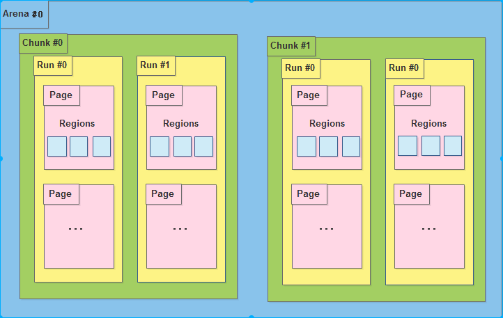
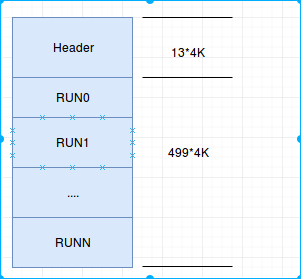
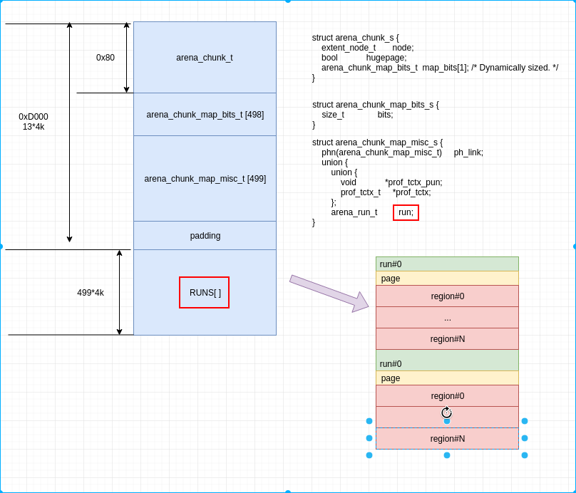
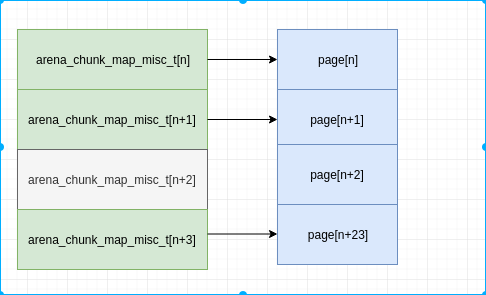
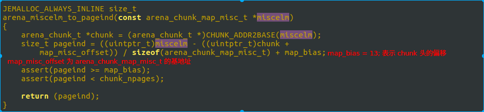

jemalloc剖析 (未完待续)¶
什么是内存分配器¶
已知的比较好的内存分配器有 dlmalloc, ptmalloc, tcmalloc, jemalloc. 所谓内存分配器, 就是管理和分配内存池里的数据. 我们先看个简单的jd物流概念.
一般我们上jd买电子产品, 会直接从昆山仓库发货. 而如果我们买大件物品, 比如买个婴儿车, 作者本人买的时候, 物流就是从武汉先到昆山仓库, 再从昆山仓库到我们用户手里.
内存分配器就类似jd物流, 我们就是对应通过malloc申请内存的进程. 根据我们申请内存的大小和不同场景, 会从不同的区域划分内存给到我们.
所以, 我们知道, 内存分配一般都按大小分级, 且一般在内存内存分配器中保存着内存池用于快速申请.
jemalloc 简介¶
dlmalloc 是经典的内存分配器, 其基本实现是类似kernel的伙伴系统. 而 jemalloc 是现代内存分配器, 其最大的优势是多线程分配能力. 在多核环境下, 进程效率的最大瓶颈已经变成如何用好多线程和如何避免锁. jemalloc 实现了尽可能地避免锁, 从而加快多线程环境下的内存申请和释放.
基础结构¶
存储单元结构¶

- 内存是由一定数量的arena来进行管理. arena 是多核实现中用来避免 cpu cache 访问失败的, 其数量一般为 cpu * 4. 也就是在4核cpu上, 如果进程的线程数在16以内, 则每个线程分配一个Arena, 避免了竞争访问.
- 一个arena被分为若干个chunks, 一个chunks一般为2M或者4M.
- chunk 内部包含若干runs, 作为分配小块内存的基础单元
- run 由pages组成, 最终被划分为一定数量的region. 对于小内存请求, region 就是最后给用户的内存.
但是在Android上, go 版本最多为 1 个 arena, 而非go版本为2个arena.
我们看下 Chunk 的数据单元, 前面提到一个chunk, 一般2M或者4M, 也就是说, 内存池全部在chunk中, 我们看下是如何组织内存的.
2M 的Chunk, 其头数据包含 12 页, 剩下的 500页, 就是内存池, 用于返回给到用户的.

我们看下更详细的结构.

从上图可以知道, region 是内存分配的最小单元, run 包含多个 region, 是 page 的整数倍, 负责小内存的分配.这整张图其实严格意义上算小内存分配的内存管理图, 但是大内存和超大内存分配, 其实就是小内存的精简版, 所以, 我们这次主要关注小内存.
熟悉 dlmalloc 或者了解伙伴系统的同学, 应该知道, dlmalloc 在内存划分上进行了分类分级, 不同大小的内存被分类到不同的级别, 然后不同的级别有不用的内存池. 在上图中, run 就是一个级别, 比如 8byte, 则run下面挂的所有 region 都是8byte, 且所有申请内存 0~8 byte 的, 都会到 8byte 这个run级别下寻找对应的空闲内存.
所以, 类似上面的物流, 我们换一种类比, 则 region 是商品, run 是物品架, 该架子上放同类商品, 而 chunk 是一个仓库. 一个仓库里可以包含各种不同的货架. 一个货架上只能包含相同的商品.
管理单元¶
如果我们的仓库是由机器人来分类, 每次来一个订单后, 需要机器人取出指定的商品. 则我们需要设计管理单元和对应的算法, 来让我们的机器人一最快的速度取到我们想要的商品.
我们依然以小内存分配为例子.
在 arena 中存在一个分类的概念.
struct arena_s { unsigned ind; // ind 表示在 arenas 数组中的位置, 前文介绍了 arena, 提到会有多个, 用于不同CPU的cache // ... ql_head(extent_node_t) achunks; // 链表, achunks 就是前面的仓库, 也就是说这个对象管理了多个仓库 // .. arena_chunk_t *spare; // 最近访问的仓库, 用于快速访问 ql_head(extent_node_t) huge; // 巨大内存的申请, 此处不介绍 // ... arena_bin_t bins[NBINS]; // 分类, 将所有能管理到的chunk中的run进行分类并放入到不同的 bins 中. // ... }
我们关注 bins , 这个就是分类箱子, 就像分类表. 比如一个 8byte 的表, 里面记录的全部都是 8 byte 的货架位置, 通过这个表, 可以快速找到货架位置.
这个分类为 36 , 也就是说有 36个 bins. 我们来分别看下 bins 结构的内容和36个类别是啥.
struct arena_bin_s { malloc_mutex_t lock; // 锁, 用于多线程访问时, 加锁. arena_run_t *runcur; // 当前未放满的货架 arena_run_heap_t runs; // 所有未放满的货架 arena_run_heap_t runs_avail[NPSIZES]; // 所有未被分类的货架, 在某一类别货架不够时, 从此处获取一个新货架放商品. //... }
从上面的结构, 很容易猜测找货架的方法, 先查看当前货架, 如果当前货架未满(还有未分配的region), 则直接找到当前货架, 否则从所有未满的货架中寻找一个离最近的(内存地址最低)货架, 并记录为当前货架.
下面看下货架的分类.
| ind | reg size | reg num | run size |
|---|---|---|---|
| 0 | 0x8 | 0x200 | 0x1000 |
| 1 | 0x10 | 0x100 | 0x1000 |
| 2 | 0x20 | 0x800 | 0x1000 |
| 3 | 0x30 | 0x100 | 0x3000 |
| 4 | 0x40 | 0x40 | 0x1000 |
| 5 | 0x50 | 0x100 | 0x5000 |
| 6 | 0x60 | 0x80 | 0x3000 |
| 7 | 0x70 | 0x100 | 0x7000 |
| 8 | 0x80 | 0x20 | 0x1000 |
| 9 | 0xa0 | 0x80 | 0x5000 |
| 10 | 0xc0 | 0x40 | 0x3000 |
| 11 | 0xe0 | 0x80 | 0x7000 |
| 12 | 0x100 | 0x10 | 0x1000 |
| 13 | 0x140 | 0x40 | 0x5000 |
| 14 | 0x180 | 0x20 | 0x3000 |
| 15 | 0x1c0 | 0x40 | 0x7000 |
| 16 | 0x200 | 0x8 | 0x1000 |
| 17 | 0x280 | 0x20 | 0x5000 |
| 18 | 0x300 | 0x10 | 0x3000 |
| 19 | 0x380 | 0x20 | 0x7000 |
| 20 | 0x400 | 0x4 | 0x1000 |
| 21 | 0x500 | 0x10 | 0x5000 |
| 22 | 0x600 | 0x8 | 0x3000 |
| 23 | 0x700 | 0x10 | 0x7000 |
| 24 | 0x800 | 0x2 | 0x1000 |
| 25 | 0xa00 | 0x8 | 0x5000 |
| 26 | 0xc00 | 0x4 | 0x3000 |
| 27 | 0xe00 | 0x8 | 0x7000 |
| 28 | 0x1000 | 0x1 | 0x1000 |
| 29 | 0x1400 | 0x4 | 0x5000 |
| 30 | 0x1800 | 0x2 | 0x3000 |
| 31 | 0x1c00 | 0x4 | 0x7000 |
| 32 | 0x2000 | 0x1 | 0x2000 |
| 33 | 0x2800 | 0x2 | 0x5000 |
| 34 | 0x3000 | 0x1 | 0x3000 |
| 35 | 0x3800 | 0x2 | 0x7000 |
通过以上的bin表, 我们找到了货架, 那么, 货架中, 我们怎么知道哪个位置有我们要的商品呢?
struct arena_run_s { szind_t binind; // 类别, 也就是 bin 的索引号 unsigned nfree; // 标记这个货架还有多少有效商品 bitmap_t bitmap[BITMAP_GROUPS_MAX]; // 商品是否有效的标记. 有效 为 1, 否则 为 0. nfree 就表示 bitmap 中 1 的个数. }
从前文我们知道, arena_run_s 对象是在 chunk 的头, 与实际的用户数据是隔离的, 那么是如何通过 bitmap 来找到对应空闲的内存呢?
我们回到前面的图, 再看一下, arena_chunk_map_misc_t , arena_chunk_map_bits_t 和 剩下的页数都是 499 . arena_chunk_map_misc_t 是对应每个页的属性, 后续会介绍其作用. arena_chunk_map_bits_t 包含成员 run, 而 arena 中包含的 runcur 指针, 这两个是同一个, arena 指向的实际上就是 arena_chunk_map_bits_t 中的run. 从上表中, 我们知道, run 可能包含多个page, 则499 page, 不会有 499个run, 也就是说 499个 arena_chunk_map_bits_t 中有空. 那么arena_chunk_map_bits_t 与其对应的多个page, 怎么关联呢? 通过偏移. arena_chunk_map_bits_t 在 499个中的偏移, 与其第一个page在499个page中的偏移相等. 如下:

所以, 我们在已知 run 的情况下, 可以通过其偏移知道 arena_chunk_map_misc_t 的地址, 然后再计算出来其偏移. 再通过偏移计算得到该run对应的第一个page位置. 相应算法如下:

map_bias 就是前文 13*4K 的 13. map_misc_offset 为 arena_chunk_map_misc_t 数组的基地址, 此处是计算出 miscelm 这个地址在数组中的位置, 然后加上 13 的偏移, 计算出 miscelm 中 run 所管理的第一个 page在 chunk 这个 2M 空间中的位置, 假设是 M. bitmap 中我们找到的第一个 1 的位置, 假设是 N, 则可以计算出来其对应的地址是 chunk + M << LG_PAGE + reg_offset + reg_size * N . 这个地址, 也就是期望找的货架上的商品, 也即是实际返回给用户的内存地址.
如果所有的内存请求都是上面的查找方式, 则我们看不到与dlmalloc的差异, 也看不到 jemalloc 所宣传的对多线程, 多核的优势. 那么, 多线程下, 内存是如何分配的呢?
如果把上面我们已经分析的方式, 比喻成武汉的jd物流仓库, 则线程内的内存申请, 就是昆山仓库. 小商品就直接从昆山仓库发货. 同理, 多线程的小内存分配, 实际在线程内存就可以申请, 不需要请求到 arena . 不过在 Android, go (低内存) 版本使用的是上面这套机制, 只有正常版本, 才开启了 tcache 功能, 在线程内直接申请内存.